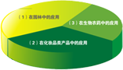
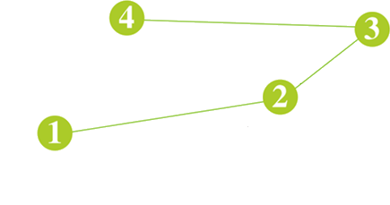

 勉县绿坤农林发展有限公司-坐落于全国闻名的花木之乡勉县，紧邻国家级杨凌农业高新示范区，北邻西宝高速，交通十分便利。 我苗圃基地苗木生产、经营适宜于：公路、铁路、景观工程、园林绿化、城市小区绿化、荒山绿化、护坡固堤、防风固沙、退耕还林、苗圃建设，等众多绿化工程建设。二次移植苗木花卉、大乔木类、花灌木类、彩叶苗木类、地被类、落叶乔木、等精品苗木花卉，规格、品种齐全。形成一站式购齐的经营模式，为广大采购单位提供极大的便利条件。本苗圃基地苗木花卉产品适应性强，易成活，成活率极高。产品远销全国各省市地区 ！
